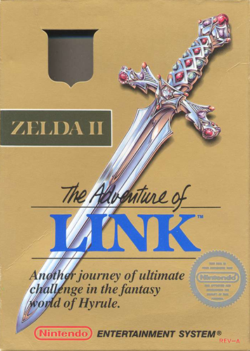
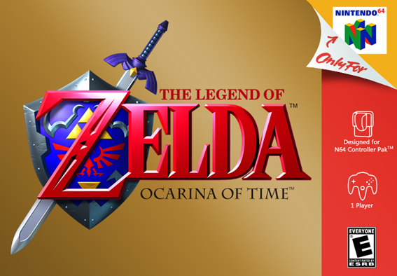
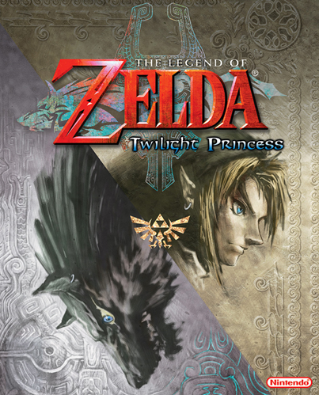

The Legend of Zelda
Centra sua trama em torno de um menino chamado Link , que se torna o protagonista central ao longo da série "Há muito, muito tempo atrás, o mundo estava em uma era de caos.
"No meio desse caos, em um pequeno reino na terra de Hyrule, uma lenda foi transmitida de geração em geração, a lenda da 'Triforce'; triângulos dourados possuindo poderes místicos. Um dia, um exército do mal atacou este pequeno reino pacífico e roubou a Triforce of Power. Este exército era liderado por Ganon, o poderoso Príncipe das Trevas que procurou mergulhar o mundo no medo e na escuridão sob seu governo. Temendo seu governo perverso, Zelda, a princesa deste reino, dividiu a Triforce da Sabedoria em oito fragmentos e os escondeu por todo o reino para salvar a última Triforce restante das garras do maligno Ganon. Ao mesmo tempo, ela ordenou que sua babá mais confiável, Impa, escapasse secretamente para a terra e vá encontrar um homem com coragem suficiente para destruir o malvado Ganon. Ao ouvir isso,Ganon ficou com raiva, aprisionou a princesa e enviou um grupo em busca de Impa."
"Enfrentando florestas e montanhas, Impa fugiu para salvar sua vida de seus perseguidores. Ao atingir o limite de sua energia, ela se viu cercada pelos capangas do mal de Ganon. Encurralada! O que ela poderia fazer? ... Mas espere! Nem tudo estava perdido . Um jovem rapaz apareceu. Ele habilmente expulsou os capangas de Ganon e salvou Impa de um destino pior que a morte."
"Seu nome era Link. Durante suas viagens, ele encontrou Impa e os capangas de Ganon. Impa contou a Link toda a história da Princesa Zelda e do malvado Ganon. Ardendo com um senso de justiça, Link resolveu salvar Zelda, mas Ganon era um oponente poderoso. Ele segurava a Triforce of Power. E então, para lutar contra Ganon, Link teve que reunir os oito fragmentos espalhados da Triforce of Wisdom para reconstruir o triângulo místico. Se ele não pudesse fazer isso, haveria não haveria chance de Link conseguir abrir caminho até a Montanha da Morte, onde Ganon vivia."
"Link pode realmente destruir Ganon e salvar a Princesa Zelda?
"Apenas sua habilidade pode responder a essa pergunta. Boa sorte. Use a Triforce com sabedoria."
_gold.png)
Zelda II: The Adventure of Link
É a segunda parcela principal da série The Legend of Zelda e a sequência direta de The Legend of Zelda. É a segunda parcela principal da série The Legend of Zelda e a sequência direta de The Legend of Zelda.
The Legend of Zelda: A Link to the Past
É a terceira parcela principal da série The Legend of Zelda , e o primeiro e único título para o Super Nintendo Entertainment System. A Link to the Past foi um retorno à visão aérea e ao estilo de jogo de The Legend of Zelda . O jogo introduziu novos itens importantes para a série, como a Master Sword e o conceito de dois mundos diferentes ( Light World e Dark World ).

The Legend of Zelda: Link's Awakening
Is the fourth main installment of The Legend of Zelda series. It is the first title in the series to be released on handheld system, and the only Zelda title on the original Game Boy. Since its release, Link's Awakening has been popular among fans and critics; by 2004, the game had sold 3.83 million copies worldwide. In 2009, Guinness World Records named it the 42nd most influential video game of all time.

The Legend of Zelda: Ocarina of Time
Is the fifth main installment of The Legend of Zelda series and the first to be released for the Nintendo 64. It was one of the most highly anticipated games of its age, and is listed among the greatest video games ever created by numerous websites and magazines. Released in the United States on November 23, 1998, it was the first game in The Legend of Zelda series that was visually displayed in 3D.
It is widely considered to be a classic, most famously scoring the first perfect 40/40 score in Famitsu Magazine - a feat that only 26 games (including The Wind Waker, Skyward Sword and Breath of the Wild) have ever achieved. In addition, G4 television declared it "the #1 game of all time" as well as Nintendo Power. Ocarina of Time is listed in Guinness World Records - Gamer's Edition 2008, as the highest ranked game of all time. In the 2010 Gamer's Edition, Ocarina of Time was updated as "the most critically acclaimed game of all time." It is also the highest scoring game of all time on Metacritic, at 99/100. It has also been ranked the greatest video game of all time by dozens of other publications.
The Legend of Zelda: Majora's Mask
Is the sixth main installment of The Legend of Zelda series, first released on the Nintendo 64 in 2000. Unique among The Legend of Zelda series, the game includes a time system that spans three days, and this cycle must be reset periodically to progress through the game. Majora's Mask is the sequel to the first 3D Zelda game, Ocarina of Time, and uses the same engine, as well as many graphic resources. Many of the conventions pioneered in Ocarina of Time are present in Majora's Mask, including characters, enemies, and items.
Majora's Mask is one of the few Zelda games in which Ganon does not play any role whatsoever. In addition, Princess Zelda does not play a major role; she is only seen once in a flashback scene from Ocarina of Time.

The Legend of Zelda:Oracle of Ages
Is one of two The Legend of Zelda titles released for the Game Boy Color, the other being Oracle of Seasons, both representing the seventh and eighth main installments of the series. Released near the end of the system's lifespan, Oracle of Ages and its counterpart were said to "send the Game Boy Color out with a bang." In anticipation of the upcoming release of the Game Boy Color's successor, the Game Boy Advance, the games exhibited special features (such as the Advance Shop) when played on the new handheld system.
After completing one of the two games, they can be linked to form a single, linear plot (as opposed to two parallel ones) with an alternate ending. Game-linking also unlocks extra content, such as new items. The game is named after its central character, Nayru, Oracle of Ages, and the element that is manipulated by Link in the game—the Ages.

The Legend of Zelda: Oracle of Seasons
Is one of two The Legend of Zelda titles released for the Game Boy Color, the other being Oracle of Ages, both representing the seventh and eighth main installments of the series. Released near the end of the system's lifespan, Oracle of Seasons and its counterpart were said to "send the Game Boy Color out with a bang." In anticipation of the upcoming release of the Game Boy Color's successor, the Game Boy Advance, the games exhibited special features (such as the Advance Shop) when played on the new handheld system.
After completing one of the two games, they can be linked to form a single, linear plot (as opposed to two parallel ones) with an alternate ending. Game-linking also unlocks extra content, such as new items. The game is named after its central character, Din, Oracle of Seasons, and the element that is manipulated by Link in the game, the four seasons.
The Legend of Zelda: Four Swords
Is the ninth main installment of The Legend of Zelda series, released alongside A Link to the Past for the Game Boy Advance as a package known as A Link to the Past & Four Swords. It was the first multiplayer The Legend of Zelda game to be released, requiring two to four Game Boy Advance systems with a copy of the game to be linked up. It is the first in the Four Swords series. The game introduced Vaati as a new main boss for the franchise. By 2004, A Link to the Past & Four Swords had sold 1.89 million copies worldwide.
The Legend of Zelda: Wind Waker
Is the tenth main installment of The Legend of Zelda series. It is the first Zelda game for the Nintendo GameCube & the sixth game in the series to be released on a Home console. It was released in Japan on December 13, 2002, in North America on March 24, 2003, in South Korea on April 16, 2003, in Europe on May 2, 2003 and in Australia on May 7, 2003.
The Wind Waker is notable for being the first game in the series to employ cel-shading, a lighting and texturing technique that results in the game having a cartoon-like appearance. It also differentiates itself from other Zelda games with its massive Overworld, the Great Sea, which must be explored using a boat, the King of Red Lions. It is an indirect sequel to Ocarina of Time, taking place several hundred years after the events of the previous games.
Although the seafaring gameplay and cartoon-like graphics were a point of critique for some, The Wind Waker was, in the end, the fourth best-selling GameCube game of all time. However, it should be noted that pre-orders of the game were significantly boosted by the inclusion of a pre-order bonus disc, which features Ocarina of Time and Master Quest. Master Quest is an altered port of the original Ocarina of Time, with partially re-designed, more difficult dungeons.

The Legend of Zelda: Four Swords Adventures
Is the eleventh main installment of The Legend of Zelda series. It incorporates a graphical style that combines Four Swords and A Link to the Past. It is the only console Zelda title to date to incorporate multiplayer elements into its main campaign. Because of its single-player elements, Four Swords Adventures is also the first game in the series to allow a single player to control more than one Link at once, and it utilizes various methods to allow the player to make use of the four Links, such as formations. Also, it is the only title to break locations and temples up into succinct, separate stages and levels which can be replayed even after beating them once. The game itself, though an innovation in Zelda gameplay, is heavily inspired by the music, graphics, and locations of A Link to the Past.

The Legend of Zelda: The Minish Cap
Is the twelfth main installment of The Legend of Zelda series. It was released for the Game Boy Advance in 2004.
Like most other titles in the series, The Minish Cap features the fully explorable land of Hyrule, although it can be viewed from the eyes of a human or the eyes of a Minish, a race of tiny people and an alternate form that Link can transform into. The game is the first in the story surrounding the Four Sword and features Vaati as the game's main villain. However, unlike the multiplayer focus of the other games in the series, The Minish Cap retains the original form of exploration and dungeons as seen in A Link to the Past, Oracle of Seasons, and Oracle of Ages, as well as returning characters and game mechanics such as Malon and the Spin Attack. New features include fusing Kinstones and shrinking to the size of a Minish.
The Legend of Zelda: Twilight Princess
Is the thirteenth main installment of The Legend of Zelda series, released for both the Nintendo GameCube and Wii. It was highly anticipated by many members of the gaming community and was regarded as finally fulfilling the dreams of those who wanted a much more realistic and mature Zelda game, as seen in the SpaceWorld 2000 GameCube Tech Demo. It is the first, and so far only, Zelda game to be rated T by ESRB, and the first to be rated 12+ by PEGI, with rating descriptors including "animated blood" and "fantasy violence". The game is also notable for being the first console Zelda title released in the United States before Japan, as the Wii version was released in America on November 19, 2006, whereas the Japanese versions were released on December 2. Because of this, Twilight Princess was one of the launch titles for the Wii alongside Wii Sports in the United States.
The Legend of Zelda: Phantom Hourglass
Is the fourteenth main installment of The Legend of Zelda series. It is the first The Legend of Zelda game for the Nintendo DS and a direct sequel to The Wind Waker.
The development team for Phantom Hourglass has many returning developers from Four Swords Adventures, many of whom, in turn, were chosen from those who worked on A Link to the Past.
The Legend of Zelda: Spirit Tracks
Is the fifteenth main installment of The Legend of Zelda series. It is the second Zelda game for the Nintendo DS.
The Legend of Zelda: Skyward Sword
Is the sixteenth main installment of The Legend of Zelda series. It is the first The Legend of Zelda game created specifically with the Wii in mind, and requires Wii Motion Plus. Upon its North American release, a special edition Skyward Sword bundle became available at the price of $69.99. The bundle includes a copy of Skyward Sword, as well as a gold Wii Remote Plus. Additionally, a limited edition CD, featuring music from The Legend of Zelda 25th Anniversary Symphony concerts, is also packaged alongside all early purchases of the standard and special edition copies of Skyward Sword.

The Legend of Zelda: A Link Between Worlds
Is the seventeenth main installment of The Legend of Zelda series. It is the first Zelda title developed specifically for the Nintendo 3DS and an indirect sequel to A Link to the Past, featuring the same version of Hyrule but new characters and gameplay elements. The title was released on November 22, 2013, in North America and Europe, November 23 in Australia, and December 26 in Japan. The Korean version was released the following year, on June 21, 2014.

The Legend of Zelda: Tri Force Heroes
is the eighteenth main installment of The Legend of Zelda series. The game was released on October 23, 2015, in North America and Europe, October 24 in Australia, and October 22 in Japan. It was revealed during E3 2015 on June 16.
The Legend of Zelda: Breath of the Wild
is the nineteenth main installment of The Legend of Zelda series. It was released simultaneously worldwide for the Wii U and Nintendo Switch on March 3, 2017.